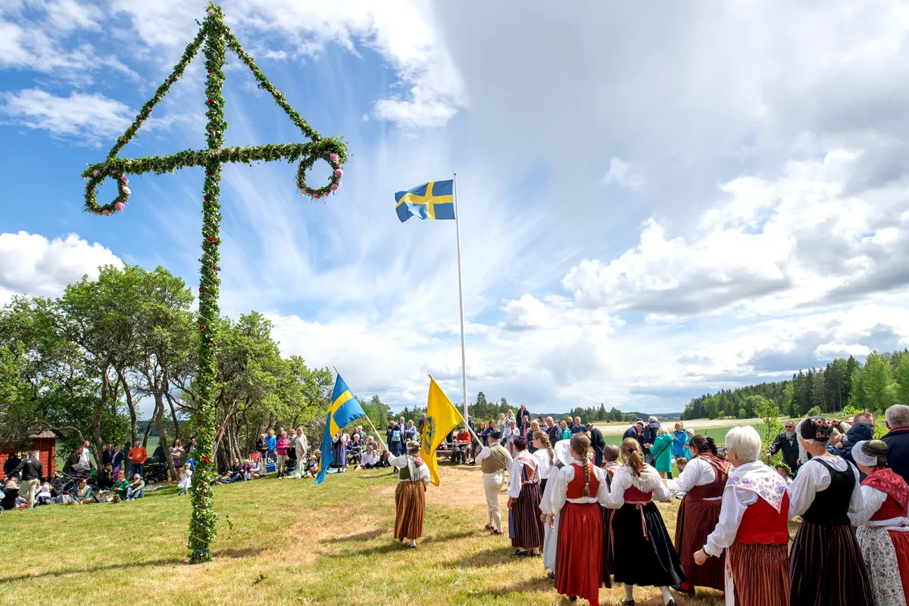

Sanat ve Tasarım
İsveç, minimalist estetiği ve işlevselliğiyle tanınan modern tasarım akımının öncülerindendir. Mobilya, grafik tasarım ve moda alanlarında dünya çapında ünlü markalar ortaya çıkarmıştır.
Bu tasarım anlayışı, ülkenin kültürel kimliğinin ve uluslararası algısının temelini oluşturur.
Geleneksel Değerler
İsveç'te aile, doğa ve toplumsal dayanışma gibi geleneksel değerler modern yaşamla harmanlanır. Ulusal bayramlar, yerel festivaller ve geleneksel el sanatları, kültürel mirasın korunmasına hizmet eder.
Müzik, edebiyat ve sinema alanlarında da İsveç, uluslararası başarılarıyla adından söz ettirir.
Günümüzde kültürel çeşitlilik, inovasyon ve sosyal katılım, İsveç kültürünün dinamik yapısını oluşturan temel öğelerdir.